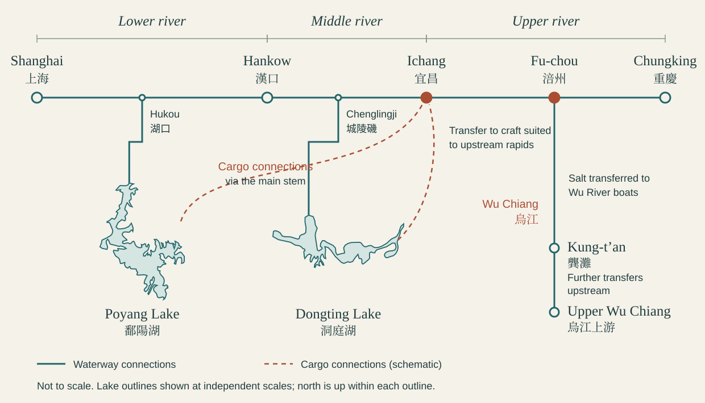
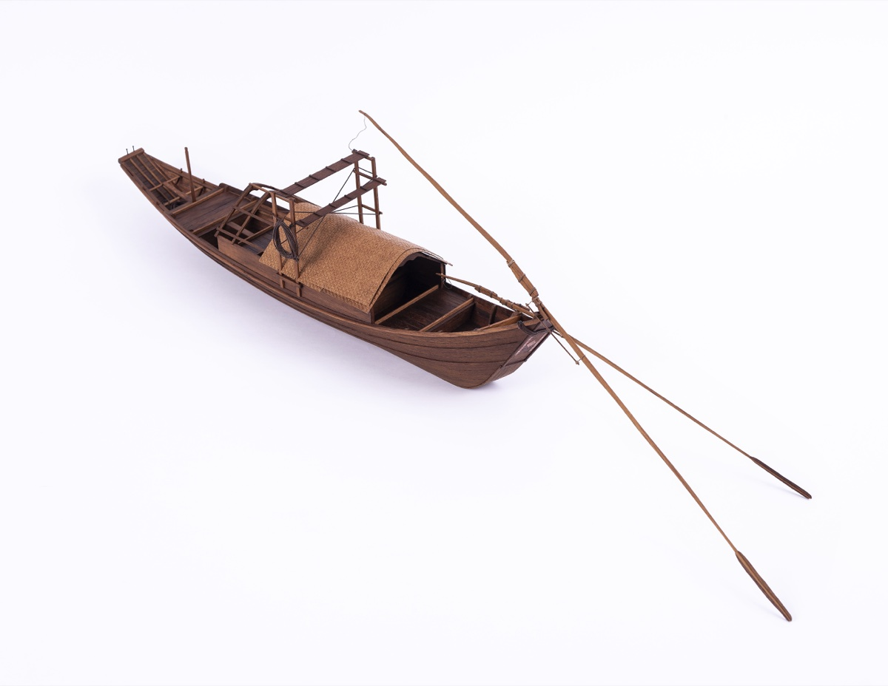
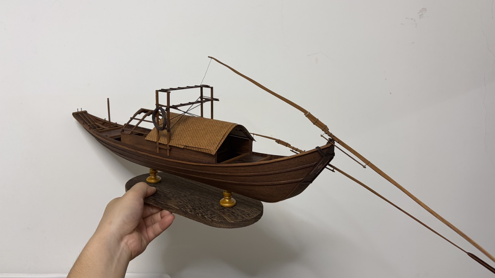
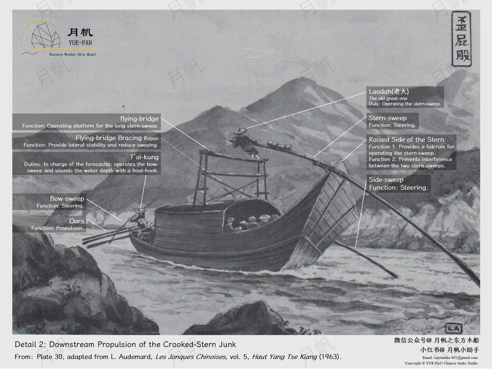
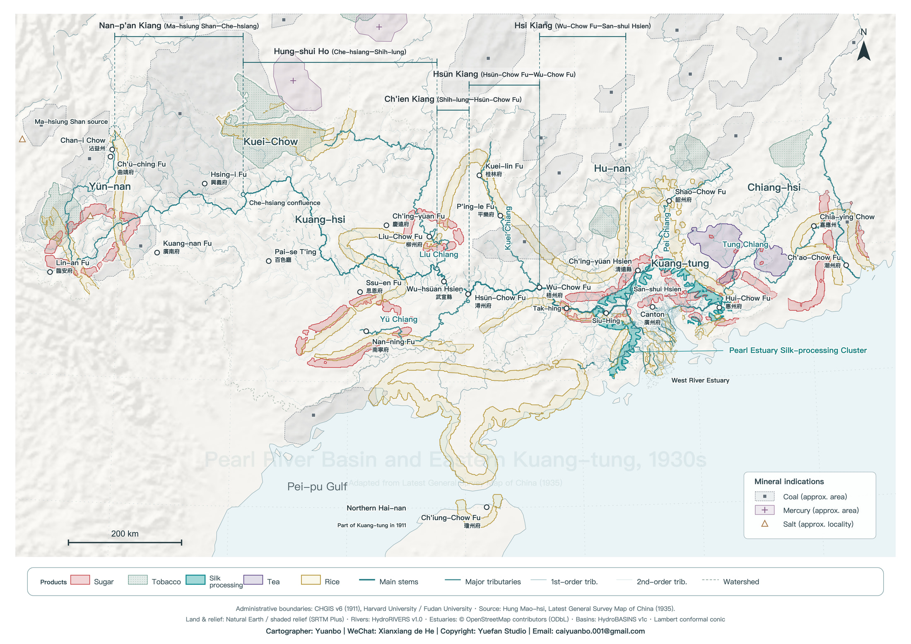

长江 / 解释性区域重构
重构被轮廓包围的区域
实色符号转成区域，断续的环带则被解释为围合边界。缺墨处依靠可见轮廓与人工核查进行重构，推定的连接段单独记录。七类物产共形成 91 个重构要素；这一数量包含了将湖北、湖南稻米轮廓连接起来等解释性决定。
历史地图重绘 长江流域物产图
我根据洪懋熙 1935 年的地图重绘了七类物产的分布，展示长江干支流沿岸有哪些产区。从这张图上，可以看到歪屁股船往来的乌江，在一个从四川延伸到沿海的贸易区域中处于什么位置。
阅读历史文献时，我开始追问：河流名称、区域认同与航行实践，如何呈现同一条河流的不同地理面貌？这些认识，为我在水文学中学到的 Strahler 与 Shreve 河网分级体系之外，增加了理解长江的视角。
“扬子江”最初是南京至河口这一长江下游江段的地方性名称。到了十九世纪，英文文献逐渐把这个名称用于更远的上游。
金沙江 （River of Golden Sand）、 川江 （四川江段）、 荆江，以及 皖江 ，赋予各段江水具体的区域身份。对峡江的描述，则让人们通过沿途地貌认识这条河流。

夏士德（G. R. G. Worcester）， 《长江的帆船与舢板》（The Junks and Sampans of the Yangtze） （1947–1948）
各批货物的路线并不相同，并非全部依次经过各港。赭色虚线表示经干流衔接的货运关系，不代表直达航线或班次。灰色虚线括号标示三峡的大致范围；本图不按比例绘制。
湖泊轮廓： Natural Earth，1:1000 万，为现代参考轮廓，并非历史岸线复原。 打开完整示意图。
水流、滩险、船型、装卸方式、船帮归属、母港与贸易关系，使不同江段各具特点。在宜昌，转运将上游船只与服务于长江中下游及其湖区水网的船只衔接起来。
从 乌江 出发，跟随货物经过涪州，我们便能看见：一艘只服务于特定航段的船，如何参与更广阔的长江运输网络。

制图选择
为了把歪屁股船放回长江的历史地理之中，我将行政区划、历史地名与河流水网结合起来。
我采用中国历史地理信息系统（CHGIS）项目发布的 1911 年行政区划 Shapefile，作为晚清行政空间的底图。行政驻地标注晚清名称，并使用威妥玛拼音；与现名不同的地方，在括号内补充现代地名。这为阅读稍后的民国史料提供了历史地理参照。
在视觉上，我特别强调四川及长江上游的主要支流与其下一级支流，让读者更容易追踪它们与中游湖泊、平原乃至河口的水路联系。结合民国地图与中国海关出版物，这张河网底图为追踪史料中的航路和转运关系提供了地理框架。


浅色色带勾勒出各类作物的分布范围。我在轮廓上留出缺口，让读者能顺着河道，穿过糖、麻产区重叠的地方。

我最初通过支流理解“形势”：山谷让水流向一处，山脊又将水分向另一处。物产图让我换一种方式阅读同样的地形。在成都周边，我希望读者能沿着一条河，穿过同时标有糖和麻的区域。
浅色、断续的色带构成疏松的圈，其中一些并未闭合。它们表示轮廓内部的物产分布区域，并不意味着物产只分布在色带本身。
使用较重的填色时，我既难以看清河流，也容易失去对物产区域形态的感知。我减淡颜色，并在选定的边缘留出开口，让空间格局更容易辨认：物产区域在哪里集聚、如何在流域内延展，又在哪里彼此重叠。我希望读者既能顺着这些区域的形态与走向阅读，也能持续看清河网。底层数据仍保留重叠关系，包括最终展示中省略部分边线的地段。
乍看之下，原图像是一团交叠的颜色。同一地点可能标有几种物产，图面又同时使用实色块、纹理填充和有色轮廓。褪色与套印使这些符号更难区分，单一的颜色阈值无法可靠地将物产与河流、铁路或另一类产品分开。
我用印刷经纬网对主图进行地理配准，提取物产时排除图例和独立附图。采用受约束的二次变换处理扫描形变，并以独立检查区分“与经纬网吻合”与“历史地图本身较为粗略的地理表达”。
我用局部样本引导颜色与纹理提取，并在核查窗口中区分相似符号：红色糖产区与铁路、深紫色茶产区与浅色麻轮廓，以及烟草纹理与水体底色。每类物产都回到扫描原图核对，不能将所有颜色相近的像素都视作证据。
我逐段核对断裂轮廓，并单独保存推定的边界段，以便重新检查各处接合。
长江 / 解释性区域重构
实色符号转成区域，断续的环带则被解释为围合边界。缺墨处依靠可见轮廓与人工核查进行重构，推定的连接段单独记录。七类物产共形成 91 个重构要素；这一数量包含了将湖北、湖南稻米轮廓连接起来等解释性决定。
珠江 / 保留原图符号
稻米、糖、丝和柞蚕丝保留印刷色带的宽度与间断，茶与烟草则保留为色块。导出数据中，六类物产共有 188 个不相连的片段；这些是原图符号的碎片数量，并非农业区域数量。
长江图经纬网检查残差约为 7.45 个原图像素，折合约 7.1 千米。这衡量的是配准检查结果，不等于历史地图的绝对位置精度。珠江图最终的内部经纬网残差约为 3.2 像素；与 13 处历史城市符号比较，均方根误差约为 20.7 千米。两类检查衡量的对象不同。
在最终的长江图中，部分麻边界因与其他符号冲突而未显示，源 GeoJSON 仍保留其重叠关系。因此，图面上缺少一段线，并不意味着该处没有生产。两套数据都不足以估计实际耕作面积。这里的“自然间断”指印刷色带本身的缺口；提取过程没有使用 Jenks 自然断点分类。
歪屁股船模型项目
1935 年的物产图给流域内的产品标出了位置。为了理解货物如何移动，我又读了夏士德关于乌江的记录。在涪州（今涪陵），货物可以在长江与支流之间转运；上行抵达龚滩后，又需要换船，再经四段航程通向思南。
我把这张航运图作为一次与 Codex 合作的制图实验，尝试不同的视觉表达：通过非等比例调整，给乌江更多展示空间，同时保留它与长江的连接关系。这样既能更清楚地追踪乌江航段，也能看出宜昌至重庆的轮船航线如何经过乌江汇入长江的涪州，即今天的涪陵。
夏士德记载龚滩至思南共有 71 处险滩，因此我标注整个河段，而没有把险滩逐一定位。


阅读船体
照片让船上的工作装置清晰可见：长橹伸出船体，绳索交错于船只与岸边，编织篷顶覆盖着生活与载货空间。
结合夏士德的图纸与文字，这类影像帮助我们追问：船体结构如何支持船工的行船与操纵？
在 YUE-FAN Studio，我们想知道：为什么一艘乌江盐船的船尾两侧高低不一？夏士德的图纸提供了船体线型；他对长橹的描述，则帮助我们理解这种不对称结构如何用于水上操纵。
我们先建立数字模型，再研究如何将船体及其附件设计成可拼装的木质套件。船厂师傅张玉琪老师指导我们反复调整，设计前后修改了八版。抬高的一侧船尾为一支橹提供支点，同时为另一支橹留出摆动空间。
英国科学博物馆集团也收藏着同类船型的历史模型，由中国船匠在夏士德指导下制作。 查看博物馆馆藏记录





从航路到船体
一条航线很难说明实际行船所需的劳动。这些标注图把操作过程带回视野：纤绳如何连接船体、怎样越过船首，以及长橹如何操纵。

逆流而上
上水图从岸上的牵引力讲起。竹纤绳系在牵引横梁上；换边时，提升绳与铁环帮助纤绳越过高起的船首。
另一条系岸绳控制船与河岸的距离。这套装置让河岸也成为运输体系的一部分：船上的操作依赖岸上的人力与固定点。

顺流而下
第二张图展示船上操纵装置的布置。长橹伸出船体，高架平台为船尾操作者提供工作空间。抬高的一侧船尾提供支点，并使两支橹彼此错开。
我把这张照片放在航运图旁，是因为船体形态只有放回具体江段才更容易理解。这张图记录了设备和操作位置，并不能据此还原某一次实际下滩的全部水情。
比较延伸 / 另一个河流区域
我想知道，以广州为中心的经济区域沿江向内陆延伸多远，以及这些联系如何塑造区域不平等。历史上，广西的稻米等初级产品支撑了广州及周边地区的商品经济。我追问，今天广西劳动力向沿海工厂的流动，是否与这种早期的供给格局存在相似之处，以及人口外流如何影响广西的人口红利。
Hong Maoxi 的地图描绘了柞蚕丝、烟草、糖、丝、茶和稻米六类物产。我保留了原图超出流域的覆盖范围，以便考察历史上的供给地理，而非套用现代分水岭边界。


我在广东深圳长大，毗邻香港、靠近珠江口，最初对河流的认识来自下游的日常生活。改革开放时期深圳的快速发展，是我的童年背景。学习看见更广阔的流域，也成为重新认识母亲河的一种实践。
城市天际线背后，还有一些在城市增长叙事中不易被看见的联系：从广西进入沿海工厂的劳动者、顺流运往下游的建筑河沙、上游水电站发出的电力，以及通过水库和调水系统供应的用水。绘制珠江地图，成为我理解河口日常生活如何依赖更远内陆的人、物资和水路的一部分。
我的摄影项目沿江继续这一追问，记录与渔民、船工和沿岸居民的相遇。
史料与项目资料
历史物产信息、1911 年行政参照，以及现代地形和河流数据，分别描述不同时间与层面的地理。各类数据的年代与来源在地图中保留标注。